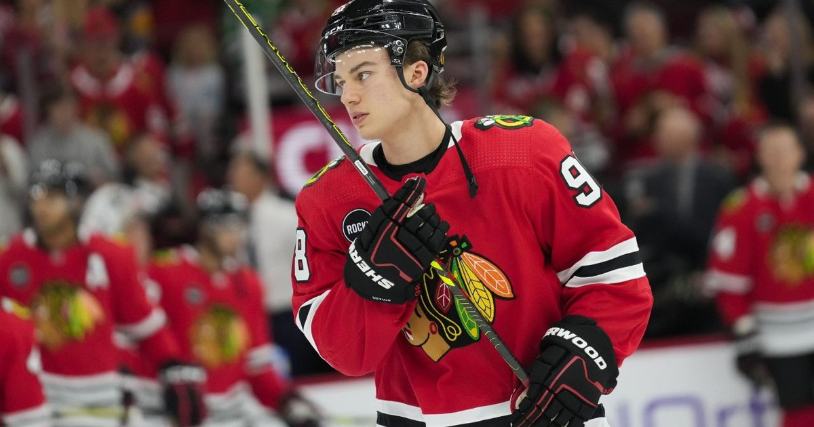

Connor Bedard is having shoulder surgery — and the Blackhawks just lost their captain again
Five months after surgery on his left shoulder, Connor Bedard needs the same operation on his right one. The Blackhawks' captain — and their leading scorer — is out for a significant spell, with no timeline until after the procedure.

Disclosure: this post contains affiliate links. I earn a commission on qualifying purchases.
The decision is made
Connor Bedard is having surgery on his right shoulder.
Chicago Blackhawks general manager Kyle Davidson announced the decision on Saturday, November 21, after the Blackhawks' 4-3 overtime win over the Calgary Flames. Bedard will go under the knife this coming week, and the team will not put a timeline on his return until after the procedure is done.
What Davidson did say: Bedard is projected to miss a significant spell. The operation is likely the same one he had on his left shoulder this past summer, which took him a little more than three months to come back from — and the team is confident he will be able to keep playing center and taking faceoffs long term.
It is the second shoulder surgery for the 21-year-old captain in just over five months.
How it happened
The injury came on Tuesday, November 17, in Chicago's 6-3 win over the Toronto Maple Leafs. Bedard hurt his right shoulder early in the third period while taking a faceoff and did not return to the game.
For a few days, the Blackhawks held out hope that rehab might be enough. On Thursday, coach Jeff Blashill ruled Bedard out of that night's game against the Columbus Blue Jackets and the three-game road trip that followed, saying the medical staff was still weighing rehab against surgery and consulting outside experts — including the specialist who operated on his left shoulder last summer.
Saturday, after the win in Calgary, the weighing was over.
The shoulder history keeps growing
This is not Bedard's first scare with his shoulders, and it is not even his first with the right one. He missed time last season after injuring the same right shoulder off a faceoff, though that one did not require surgery.
The left shoulder is the one that already went under the knife. Bedard had surgery to repair it on July 8, after injuring it in offseason training, with an initial recovery timeline of roughly four months. He beat it — returning for the season opener on October 13, 97 days after the operation, about a month ahead of schedule.
Now the right shoulder needs the same attention. Dr. Peter Millett, the surgeon who operated on the left shoulder in July, will perform this procedure as well.
What Chicago loses
Bedard leads the Blackhawks with 18 points in 15 games this season. He is the 2023 No. 1 overall pick, the face of the rebuild, and the player Chicago signed to a five-year, $75 million contract extension in July before naming him captain in September.
The Blackhawks are still finding their way — Saturday's overtime win in Calgary was their first road win of the season — and they were doing it with their best player driving the top line. Now they will do it without him for months, with no firm return date until the surgery is complete.
There is no replacing a point-a-game captain. The only question now is how long the wait is, and what the standings look like when he gets back.
Gear up: Fanatics